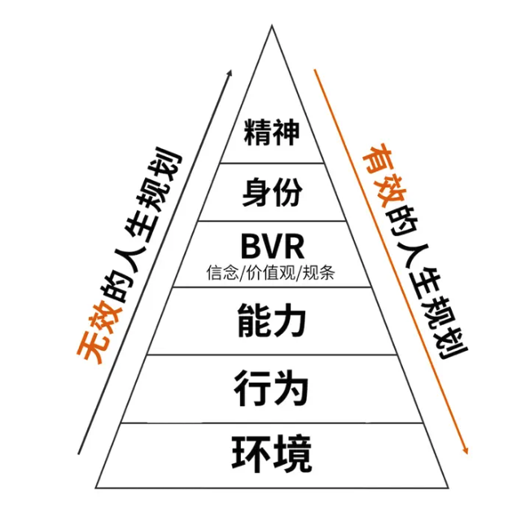

我相信大多数人树立「自己理想」的画面大概率都是站在五星红旗下，立下我要做共产主义接班人。但随着年龄增长，国人新的理想没有树立起来，而旧的理想也逐渐淡去。于是可怜可悲的人生开始了， 渐渐的我们变成现实的人。但现实就一定能过好这一生吗？
今天又一次读到谢春霖的《认知红利》的认知的六个层次，兼具理论性和可操作性， 我觉得参照书中逻辑， 指导（优化）人生系统具有具有很高的可操作性。遂简单整理，分享给大家。
问题
假设X拥有「某品牌运动鞋」的品牌店， 门店在上海闹市区经营多年， 店里有一批员工，X每周都会来店里了解经营情况。但近来，X发现
- 生意越来越差
- X发现有些鞋子的进价比淘宝上的零售价还高
- 很多客人来店里逛一圈，最后竟然都到网上下单。
- 此外， 由于生意越来越差， 店员也开始变得消极， 客人进了店， 店员都不太愿意搭理…..
- X看到这个情况非常生气，但刚准备发火， 其中某个店员竟然向X提出辞呈。
- 紧随其后，各种糟糕的事情发生， 房租变贵、滞销导致库存增加、城市中逛街的人流量变小。
- ……
店铺开始亏损，而X之前投入的大量装修成本和库存，如果现在关门，X的损失将非常大， 这个时候怎么办？
假设你是X， 你会怎么办?
认知层次
谢春霖的《认知红利》提出了人类认知的六个层次，从低到高，依次是环境、行为、能力、BVR(价值观体系)、身份、精神。一般而言，认知层次越高，解决起来越容易越有效。针对X遇到的问题，处于不同层次，解决办法和效果可能是如下
| 层次 | 思维 | 类似问题 | 理论基础 | 措施 | 不足 |
|---|---|---|---|---|---|
| 环境 | 错在外界 | 工作不顺， 领导是白痴 工作十年，没有晋升， 因为公司有办公室政治。 自己命不好 |
都是环境的错，改变环境，就能改变现有的处境 | 环境很难改变，或者改变的很慢，所以效果很差。 | |
| 行为 | 错在自己 | 收入太低，因为不够努力 买不起房子， 因为不够努力 创业失败, 因为不够努力 |
爱拼才会赢 | 店铺营业时间从8小时改为24小时, 店员三班倒， 闲暇时间打电话找客户。 |
努力，是成功的必要不充分条件。有时候有效，有时候无效。 |
| 能力 | 方法(思路)比问题多 | 线下门店生意不好，可能是因为经营模式老旧,需要学习新的商业模式 和男朋友关系处的不好， 可能是沟通能力有问题， 需要专门去学《关键对话》等书 |
一定有人遇到过类似的问题，且已经有更好的解决办法。 | 将处境拆解成团队管理、营销方式、商业模式等不同的小问题。 | 选择不同的问题， 走向也将不同。 一旦选错， 只会离正确越来越远。如何选择， 是个更大的问题！ |
| BVR | 价值观(什么是最重要的) | 我只想想过不差钱的人生， 为此我要学习经商的专业， 不浪费时间，做最有效率的事情。 | Believe信念，相信什么是对的 Value价值观，A和B哪个更重要 Rule,做事的原则 |
团队管理、营销方式、商业模式哪个是最关键的问题，彼此之间有什么关系。是否遗漏了未知，但能改天换地因素。 淘宝的出现，导致交易结构发生变化(省去中间商赚差价)。客户因为淘宝便宜，而最终在淘宝下单。但线下店最大的优势是体验丰富，可开展多种体验活动，如全城跑不死大赛，让喜欢慢跑的人加入。 |
人生赢家。依然会面临选择，如年薪百万(无风险)和经营店铺收入百万(有风险)，如何选择？ |
| 身份 | 自己想成为什么样的人 | 成为心血管医生，造福这类疾病的患者。 我要当核物理学家，因为我觉得这很酷。 |
角色还是身份 工地上，同样的搬砖的工作， 有的人认为我是搬砖的;也有人认为自己应该成为改变城市天际线的画家。 角色是被动，是别人给自己的 身份是自己主要选择的，是自己想成为的。 |
告诉自己， 我要成为自己做主的老板，而不是被别人定义自己。 | 世间高人，几乎瑕疵 |
| 精神 | 人活着就是为了改变世界 | 为天地立心 为生民立命 为往圣继绝学 为万世开太平。 |
人与世界的关系； 人生使命； |
做对世界、对社会有用的人。我为人人，追求大我。在成就他人的同时，成就自我。 | 认知拉满，人生无价，人生无憾。 |
如何成为时代佼佼者？
是否需要一级级打怪， 从低级到高级？
No！你可以直接让自己站在最高层次， 从高到底做好顶层设计，从精神层开始，从上往下规划。

| 理解层次 | 思考内容 |
|---|---|
| 精神 | 我的人生使命是什么？世界因为我变得有什么不一样？ |
| 身份 | 为了实现这个使命？五年后，我会变成一个什么样的人？ |
| BVR(价值观体系) | 一套什么样的信念、价值观、原则能帮助我达到这个身份? 什么是最重要的? 我应该坚持什么，放弃什么？ |
| 能力 | 为了实现这个身份和这套BVR价值观体系， 我应该学什么知识技能？ 掌握什么方法套路？ 什么可以做？什么不可以做？ |
| 行为 | 具体怎么做？第一步是什么？今年的计划具体怎么安排 |
| 环境 | 哪些人和资源可以帮助我实现目标？我如何去使用身边的资源。 |
非同凡想
1997年，美国苹果公司创始人史蒂夫·乔布斯为苹果公司广告《非同凡想》（原名Think Different，也被译为《致疯狂的人》）中发表了这段讲话。
Here's to the crazy ones.
向那些疯狂的人致敬。
The misfits.
致特立独行者。
The rebels.
致桀骜不驯者。
The troublemakers.
致惹是生非者。
The round pegs in the square holes.
这些人是方孔中的圆钉。
The ones who see things diffrently.
他们以不同的角度看世界。
They're not fond of rules,and they have no respect for the status quo.
他们拒绝墨守成规，也不安于现状。
You can quote them,disagree with them, glorify or vilify them.
你可以引用他们，反对他们，赞扬他们或贬低他们。
About the only thing that you can't do is ignore them.
但你唯独就是不能漠视他们。
Because they change things.
因为他们改变了世界。
They invent. They imagine. They heal.
他们发明创造，发挥想象，治愈世界。
They explore. They create. They inspire.
他们探索未知，创造奇迹，激发灵感。
They push the human race forward.
他们推动人类不断前进。
Maybe they have to be crazy.
也许有时候他们必须疯狂。
How else can you stare at an empty canvas and see a work of art?
否则你能只盯着空空如也的画布就创造出艺术作品吗？
Or sit in silence and hear a song that's never been written?
否则你能只静静坐着就唱出一首没有写出来的歌曲吗？
Or gaze at a red planet and see a laboratory on wheels?
否则你能只凝视火星时就想到移动的太空实验室吗？
We make tools for these kinds of people.
我们为这些人创造工具。
While some may see them as the crazy ones, we see genius.
有些人可能视他们为疯子，我们则视他们为天才。
Because the people who are crazy enough to think that they can are the ones who do.
因为只有疯狂到认为自己能改变世界的人，才能真正改变世界。
声明
侵删， 微信372335839